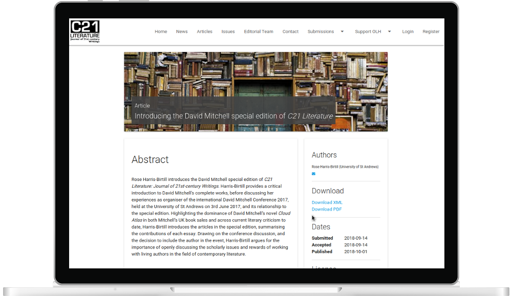

Janeway
An open source scholarly publishing platform.
Janeway is a digital platform for publishing scholarly articles online, from submission and review to editing, production and final publication.
Janeway is used by Iowa State Digital Press, Huddersfield University Press, ID Pro, UCL Press Michigan Publishing, the University of Essex and the University of West London and will soon be in use by California Digital Library to support preprints projects.
Developed by Professor Martin Eve, Mauro Sanchez and Andy Byers at the Centre for Technology and Publishing, Birkbeck, University of London, and the Open Library of Humanities, UK.